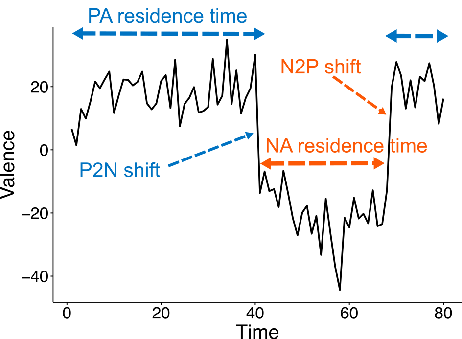
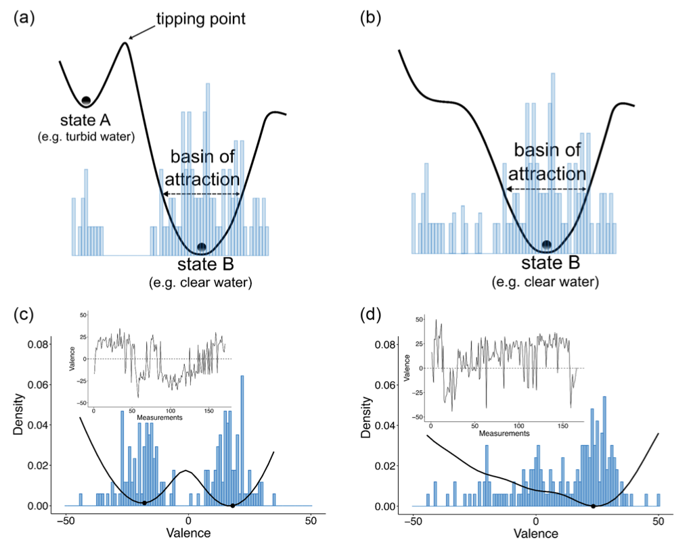
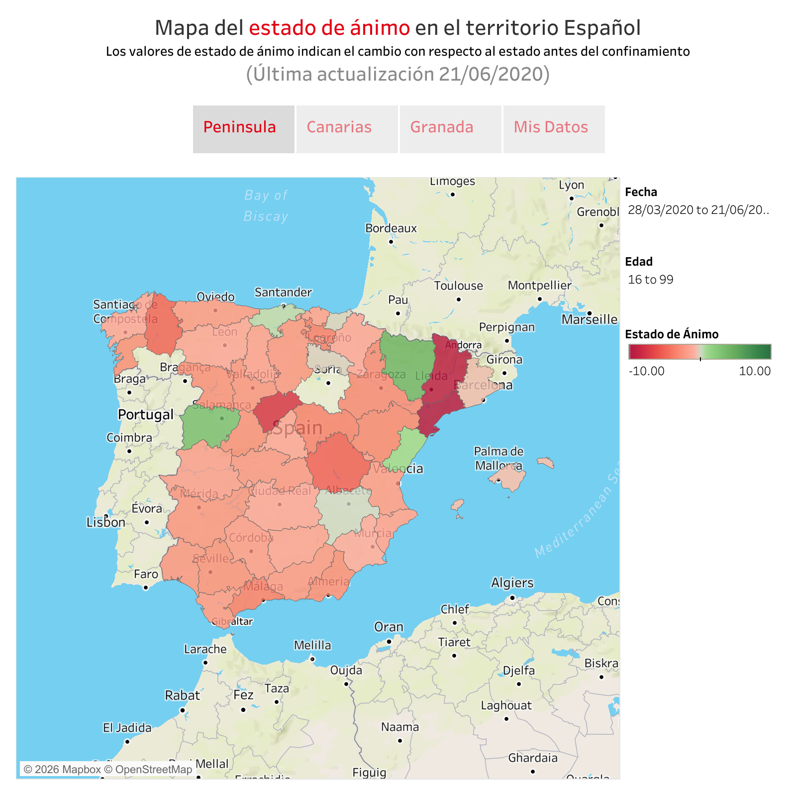
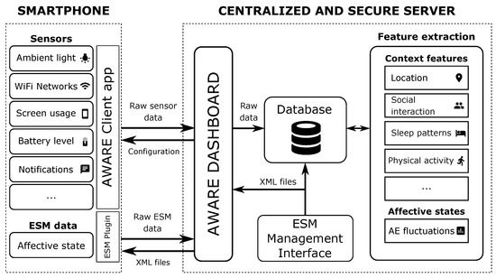
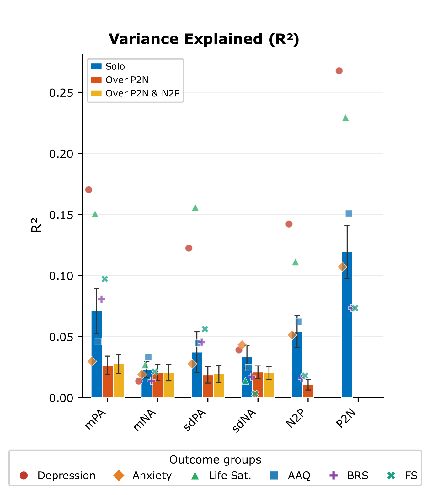

Affect Dynamics

Complex natural systems do not always change gradually — lakes can flip from clear to turbid, and savannas can shift abruptly into desert. We hypothesised that human affect behaves similarly, exhibiting abrupt transitions between positive and negative states rather than smooth fluctuations around a single emotional baseline. Our work confirms that this dynamical pattern — called bistability — is common in community samples: roughly half of the participants in our studies experience sudden jumps between positive and negative states rather than gradual drift.
Drawing on concepts from dynamical systems theory and ecology, this line of research investigates the pattern of affective fluctuations over hours and days and what those dynamics reveal about psychological health. We develop novel metrics that capture how people shift between emotional states and show that these affect shift dynamics predict well-being above and beyond traditional intensity-based measures.
Having established that shift dynamics are robust predictors of well-being, we now aim to understand what drives these transitions at the individual level. We use process-based assessment to map the psychological processes underlying affect shifts, with the goal of informing tailored therapeutic interventions.
Journal articles
-

Goicoechea, C., Dakos, V., Sanabria, D., Heshmati, S., Westhoff, M., Banos, O., Pomares, H., Hofmann, S.G., & Perakakis, P. (2025). Bistability and affect shift dynamics in the prediction of psychological well-being. Emotion, 25(4), 982–996. doi: 10.1037/emo0001441
We show that bistability is a prevalent phenomenon in human affect dynamics and develop 10 novel metrics to characterise affect shift dynamics. The Positive-to-Negative Affect Shift Ratio (P2N-ASR) is a better predictor of psychological well-being compared to traditional intensity metrics.
-

Bailon, C., Goicoechea, C., Banos, O., Damas, M., Pomares, H., Correa, A., Sanabria, D., & Perakakis, P. (2020). CoVidAffect, real-time monitoring of mood variations following the COVID-19 outbreak in Spain. Scientific Data, 7, 365. doi: 10.1038/s41597-020-00700-1
An open dataset capturing daily mood fluctuations during the first wave of the COVID-19 pandemic in Spain.
-

Bailon, C., Damas, M., Pomares, H., Sanabria, D., Perakakis, P., Goicoechea, C., & Banos, O. (2019). Smartphone-based platform for affect monitoring through flexibly managed experience sampling methods. Sensors, 19(15), 3430. doi: 10.3390/s19153430
A smartphone platform for ecological momentary assessment, enabling researchers to configure sampling schedules and self-report items for affect monitoring studies.
Preprints
-

Goicoechea, C., & Perakakis, P. (2026). “How Do You Feel?” Direct Valence Measurement Enables Affect Shift Metrics That Outperform Intensity-Based Predictors Of Psychological Well-Being. Preprint. doi: https://doi.org/10.31234/osf.io/gmkc8_v1
We replicate and extend our previous findings, providing robust evidence that how individuals move between affective states may be more diagnostic of psychological functioning than the typical intensity or variability of those states.
-

Goicoechea, C., Wallman-Jones, A., Ciarrochi, J., Hayes, S., Hofmann, S., & Perakakis, P. (2025). PBAT Network Analysis: Spanish Validation And Cross-Cultural Perspectives. Preprint. doi: https://doi.org/10.31234/osf.io/sxhwt_v1
Network analysis of the Spanish validation of the Process-Based Assessment Tool (PBAT) and cross-cultural comparisons with samples from Sweden, Poland and the US.
Preregistrations
-
Perakakis, P., Ciarrochi, J., Goicoechea, C., & Sahdra, B.K. (2025). Predicting Affect Shifts Using TS-Boruta With Process-Based Assessment Tool Items: Idionomic Analyses In An Ecological Momentary Assessment Dataset. .
This preregistered study evaluates the TS-Boruta algorithm for predicting affect shifts (positive-to-negative, P2N; negative-to-positive, N2P) as binary outcomes using an EMA dataset from Goicoechea et al. (2024). We conduct idionomic analyses at the subject level to identify which of the 18 Process-Based Assessment Tool (PBAT) items best predict P2N and N2P shifts, comparing TS-Boruta's performance and heterogeneity to other methods.
Conferences
-
Baldock Trotter, T. B., Fernández Morente, G., & Fernández Castañeda, E.C. (2025). Análisis de casos con la herramienta de evaluación basada en procesos: predicción de cambios afectivos en el trastorno depresivo persistente y el trastorno límite de la personalidad. XVII Congreso de Investigación de Estudiantes de Grado de Ciencias de la Salud, Madrid, Spain.
Poster presentation.
-
Perakakis, P., & Goicoechea, C. (2024). Affect shift dynamics in the prediction of psychological flexibility and well-being. 38th Annual Conference of the European Health Psychology Society, Cascais, Portugal.
Invited talk.
Funded projects
-
Beyond Positive and Negative: Uncovering Bistability in Affect Dynamics and their Impact on Well-being and Mental Health (BAD)
This project applies dynamical systems theory and ecological momentary assessment to investigate bistability in human affect and its relationship with psychological well-being and mental health.